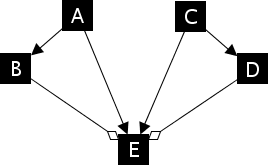
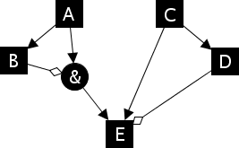

Model creation
- Boolean equations
- CellNetAnalyzer
- yEd graph editor
- Interaction graphs defined in MATLAB
- GINsim
- PBN toolbox
- Generating multi-compartment models
- Saving models
- Loading model with automatic file type detection
<< Back to main page
Boolean equations
A simple way to generate a Boolean model is the usage of Boolean equations.
Here is an example of a small network with self-activation and mutual inhibition:
expr = {'a = a || ~b', 'b = b || ~a'};
model = ExpressionsToOdefy(expr);
You can use the three MATLAB logical operators || (or), && (and) and ~ (not). Input species to the system (that have no regulatory input) are marked with <> as the Boolean equation.
Instead of specifying Boolean equations as a cell array of strings, you can also provide a text file containing one equation per line:
model = ExpressionsToOdefy('examples/feedforward.txt');
CellNetAnalyzer
Odefy can import models from the CellNetAnalyzer (CNA) toolbox (link). With an open network window in the CNA, use one of the following methods:
CNAInstall, which takes the variable name or the variable of a CNA network. This method installs the Odefy exporting and simulation functionalities as a plugin in the menu of CNA.
Use the "CNA refresh" button in the Odefy simulation dialog to reload initial values and eventually deactivated reactions from the CellNetAnalyzer graphical user interface.CNAToOdefy, which takes the CNA network variable (always present in the workspace when a network is open) and returns an Odefy model structure.
Note that Odefy is automatically integrated within current versions of the CNA toolbox.
yEd graph editor
Boolean networks for Odefy can be conveniently be created with the yEd graph editor. The user can create conventional interaction graphs or use an intuitive hypergraph representation of boolean update functions:

- Any node types can be used to represent model species.
The visual node labels (Node settings→General→Text) will be used as the names of the respective species.
- To create interactions, simply draw activatory influences as normal edges and inhibitions as diamond head arrows. We need to determine how Odefy treats multiple inputs into at a single node (here node E). Without any parameters, Odefy generates a one activator but no inhibitors behavior, leading to
E = (A or C) and not (B or D) in this example. For more information, please refer to the inline help of yEdToOdefy and GraphToOdefy
Example call:
model = yEdToOdefy('examples/twoffl.graphml');

- Alternatively, models can be precisely defined by a hypergraph representation of Boolean networks which is capable of representing any Boolean function (see also: Klamt et al., 2009)
- Different incoming edges are interpreted as OR combinations whereas incoming edges combined using a "&" labelled node represent AND gates.
- In our example this leads to the Boolean update function
E = (A and not B) or C or not D
Example call:
model = yEdToOdefy('examples/twoffl_hyper.graphml');
Interaction graphs defined in MATLAB
Interaction graphs can also be defined in MATLAB as simple adjacency matrices. Activatory influences are represented by a 1 whereas inhibitory influences are stored in the matrix as -1 values. Again, we have to assume a generalized combination logic for activators and inhibitors, as a normal graph does not contain any information on how to combine multiple input regulators.
Adjacency matrices are converted using the GraphToOdefy function:
M = [-1 0 1 0;1 0 0 -1;1 0 1 1;-1 1 0 0];
model = GraphToOdefy(M, 2, 1, 2);
The parameter combination 2,1,2 leads to an "at least one activator and no inhibitors" logic. For more information, please refer to help GraphToOdefy.
GINsim
To import models from the GINsim toolbox, use the GINSimToOdefy function. GINsim model files can be downloaded here.
PBN toolbox
The Probabilistic Boolean Networks toolbox (link) provides a stochastic approach to Boolean modeling. Odefy can both import and export models from MATLAB structures of this toolbox:
model = ExpressionsToOdefy({'a = a || ~b', 'b = b || ~a'});
[F, varF, cij] = CreateBNPBNModel(model);
odefy = BNPBNToOdefy(F,varF,cij);
Generating multi-compartment models
Odefy contains an automated multicompartment expansion procedure. Given a Boolean model and the assignment of a intercompartment flag for a given set of factors in the model, Odefy can generate a larger model resembling a linear row of connected compartments. Factors flagged as intercompartmental exhibit their influence towards the two neighboring cells and are combined using an OR logic.A short example:
single = ExpressionsToOdefy({'Otx2=~Gbx2','Gbx2=~Otx2','Fgf8=~Otx2&&Gbx2&&Wnt1','Wnt1=~Gbx2&&Otx2&&Fgf8'});
multi = MultiModel(single, [3 4], 6);
Generates 6 copies of the single model in a row, where species 3 and 4 are used as external species.
Saving models
Models can be written to MATLAB .mat files using the SaveModelMAT function:
SaveModelMAT(model,'mymodel.mat');
Loading model with automatic file type detection
The function LoadModelFile automatically detects whether the given file is a .mat file, a yEd graph file, a GINsim GINML file or a text file containing Boolean equations. Example calls:
model = LoadModelFile('mymodel.mat');
model = LoadModelFile('examples/feedforward.txt');
model = LoadModelFile('examples/twoffl.graphml');